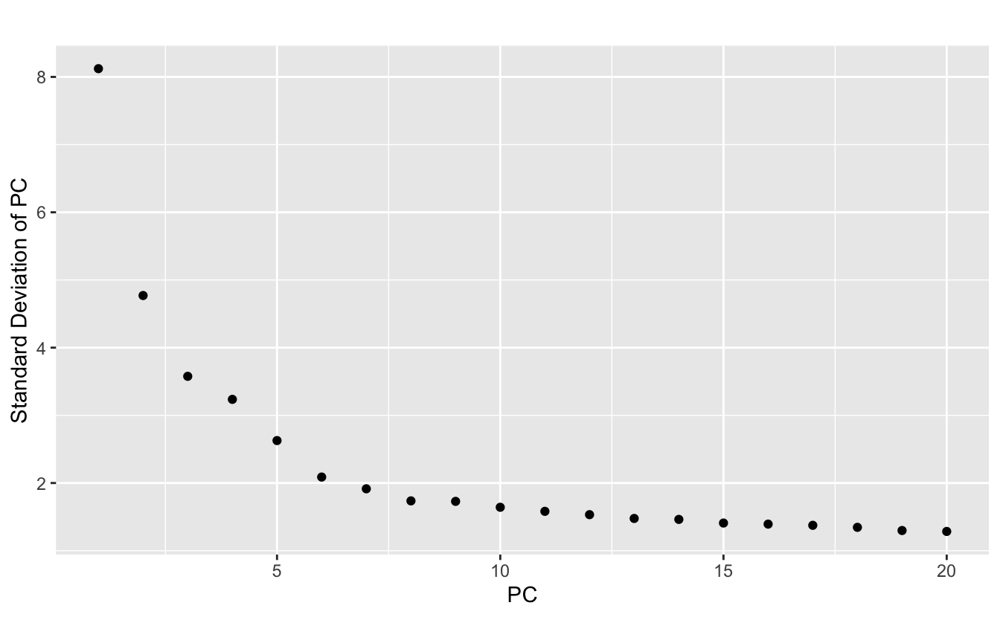
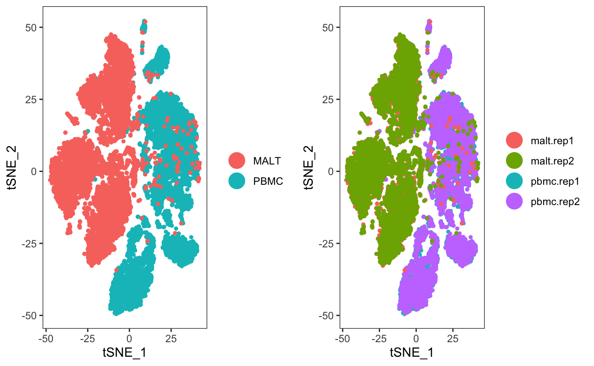
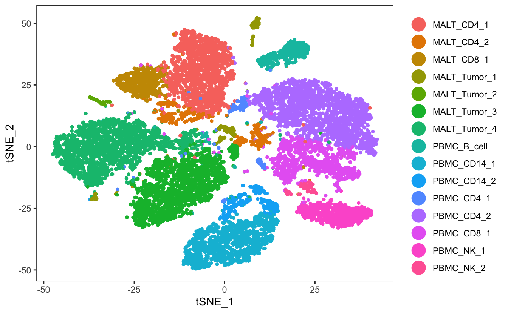
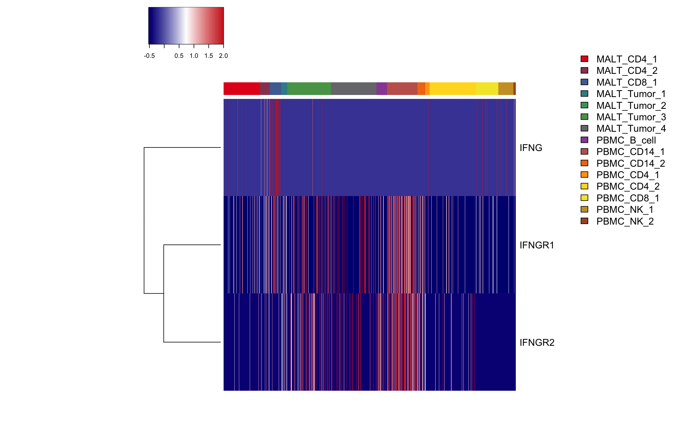
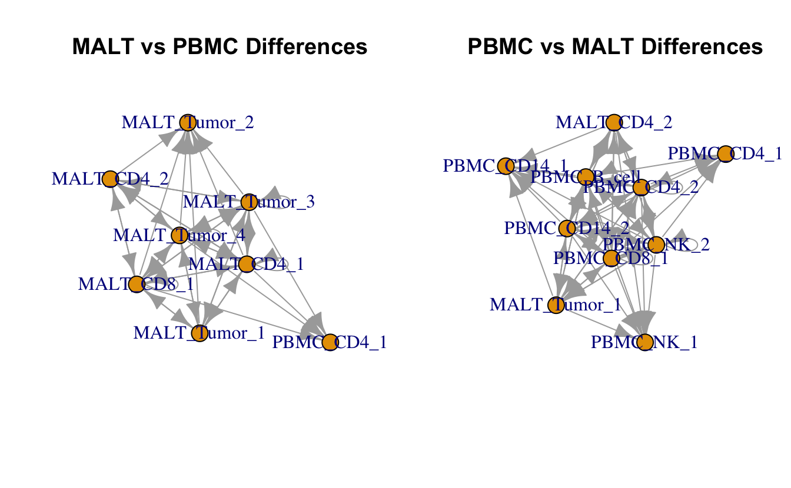
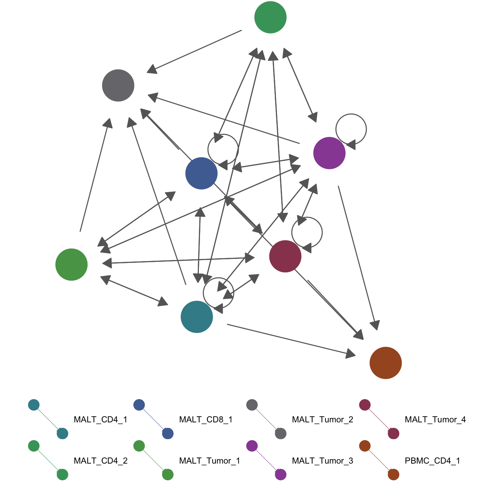

celltalker
Anthony Cillo
2019-08-25
celltalker.RmdIntroduction
Amongst the many types of analysis possible with single-cell RNAseq data is the assessment of putative cell-cell communication. celltalker seeks to evaluate cell-cell communication (that is, “talking”) by looking for expression of known pairs of ligands and receptors within and between cell populations. Any set of known ligands and receptors can be used; included in this package is the set of ligands and receptors described by the excellent work of Ramilowski et al. We recommend using this dataset as a starting point, and curating your own list of known ligands and receptors.
For the sake of robustness, we assume that there are multiple replicate samples in each group and that we are only interested in only finding consistently expressed ligands and receptors across groups (as opposed to potentially suprious interactions that are only found in one individual replicate). We accomplish this by looking at individual expression matrices for each replicate in a group, and pulling only those interactions that meet a certain threshold.
There are at least three ways in which differences in ligand and receptor interaction could be of biological interest: interactions that are uniquely present in one group versus another; differences in clusters that contribute ligands or receptors between groups; and differences in networks of cells participating in ligand and receptor interactions between groups. We provide methods to assess each of these potential biological differences, and concrete examples of each for clarity.
Vignette overview
This vignette demonstrates a standard use of celltalker on publically available data from 10X Genomics. We will go through the following steps:
- Cluster our data using a standard Seurat workflow (v.2.3.4)
- Use celltalker to build lists of consistently expressed ligands and receptors within samples groups
- Determine putative ligand/receptor interactions with a group of samples
- Evaluate uniquely expressed ligand/receptor pairs between groups
- Investigate differences in clusters contributing ligands and receptors between groups
- Interrogate differential networks of cell-cell communication between groups
Clustering data with Seurat
For this tutorial, we are utilizing two datasets publically available from 10X Genomics. Specifically, we will be using 10k Cells from a Healthy Donor - Gene Expression and Cell Surface Proteins and 10k Cells from a MALT tumor - Gene Expression and Cell Surface Proteins. We have downloaded the Feature / cell matrix (filtered) from each sample, then unzipped the files and the subdirectories. Finally, we change the name of the Features.tsv file to genes.tsv so that the Read10X function in this version of Seurat works. The raw data is available here:
https://support.10xgenomics.com/single-cell-gene-expression/datasets
We will first perform a standard analysis using Seurat to create some clusters and evaluate cell-cell communcation. Since we only have one replicate from each sample, we will divide each sample into two fake “biological” replicates (purely for the sake of this vignette!).
suppressMessages({
library(Seurat)
library(tidyverse)
library(igraph)
library(geomnet)
library(celltalker)
})
#Create a Seurat object with the raw data, and add sample-specific metadata
raw.data <- Read10X(c("/Users/arc85/Desktop/celltalker_example_data/10k_pbmc/filtered_feature_bc_matrix","/Users/arc85/Desktop/celltalker_example_data/10k_malt/filtered_feature_bc_matrix"))
#Filter out genes expressed with a count less than 1 in 3% of cells
nCountsPerGene <- rowSums(raw.data)
minReads <- 1*.03*ncol(raw.data)
genesLeft_minReads <- names(nCountsPerGene)[which(nCountsPerGene > minReads)]
raw.data.filtered <- raw.data[genesLeft_minReads,]
#Create Seurat object and add relevant metadata
ser <- CreateSeuratObject(raw.data.filtered)
data.to.add <- data.frame(matrix(NA,nrow=length(ser@cell.names),ncol=4))
rownames(data.to.add) <- ser@cell.names
colnames(data.to.add) <- c("perc.mito","perc.ribo","sample.group","sample.replicate")
mito.genes <- grep("^MT-",rownames(ser@data),value=T)
perc.mito <- Matrix::colSums(ser@raw.data[mito.genes,])/Matrix::colSums(ser@raw.data)
ribo.genes1 <- grep("^RPS",rownames(ser@data),value=T)
ribo.genes2 <- grep("^RPL",rownames(ser@data),value=T)
ribo.genes <- c(ribo.genes1,ribo.genes2)
perc.ribo <- Matrix::colSums(ser@raw.data[ribo.genes,])/Matrix::colSums(ser@raw.data)
data.to.add[,1] <- perc.mito
data.to.add[,2] <- perc.ribo
data.to.add[grep("^[ACTG]",ser@cell.names),3] <- "PBMC"
data.to.add[grep("^2",ser@cell.names),3] <- "MALT"
#Randomize cells from PBMC and MALT to two replicates each
pbmc.group <- data.to.add[data.to.add$sample.group=="PBMC",]
pbmc.rep1 <- rownames(pbmc.group)[sample(nrow(pbmc.group)/2)]
pbmc.rep2 <- setdiff(rownames(pbmc.group),pbmc.rep1)
malt.group <- data.to.add[data.to.add$sample.group=="MALT",]
malt.rep1 <- rownames(malt.group)[sample(nrow(malt.group)/2)]
malt.rep2 <- setdiff(rownames(malt.group),malt.rep1)
data.to.add[pbmc.rep1,4] <- "pbmc.rep1"
data.to.add[pbmc.rep2,4] <- "pbmc.rep2"
data.to.add[malt.rep1,4] <- "malt.rep1"
data.to.add[malt.rep2,4] <- "malt.rep2"
#Add metadata to Seurat object
ser <- AddMetaData(ser,metadata=data.to.add)
#Simple Seurat clustering workflow
ser <- NormalizeData(ser)
ser <- FindVariableGenes(ser,do.plot=FALSE)
#Remove TotalSeq antibodies from clustering analysis
ser@var.genes <- ser@var.genes[grep("Total",ser@var.genes,invert=T)]
ser <- ScaleData(ser,vars.to.regress=c("nGene","perc.mito","perc.ribo"))## Regressing out: nGene, perc.mito, perc.ribo##
## Time Elapsed: 45.9231090545654 secs## Scaling data matrix
#We will select the first 10 PCs to use
ser <- RunTSNE(ser,dims.use=1:10)
ser <- FindClusters(ser,dims.use=1:10,res=0.5,print.output=FALSE)
ser <- BuildClusterTree(ser,do.reorder=TRUE,reorder.numeric=TRUE,do.plot=FALSE,show.progress=FALSE)Now that we have generated our data, let’s have a look at it.
p1 <- TSNEPlot(ser,group.by="tree.ident",do.label=T,do.return=TRUE)
p2 <- TSNEPlot(ser,group.by="sample.group",do.return=TRUE)
p3 <- TSNEPlot(ser,group.by="sample.replicate",do.return=TRUE)
p1

Great! Now let’s customize our cluster labels by inferring cell types from the TotalSeq antibodies that were inlcuded in this experiment.
total.seq.abs <- grep("Total",rownames(ser@raw.data),value=TRUE)
total.seq.sub <- total.seq.abs[1:9]
FeaturePlot(ser,features=total.seq.sub)
cell.types <- ser@meta.data$tree.ident
names(cell.types) <- ser@cell.names
cell.types[cell.types=="1"] <- "MALT_Tumor_1"
cell.types[cell.types=="2"] <- "MALT_Tumor_2"
cell.types[cell.types=="3"] <- "PBMC_CD14_1"
cell.types[cell.types=="4"] <- "MALT_Tumor_3"
cell.types[cell.types=="5"] <- "MALT_Tumor_4"
cell.types[cell.types=="6"] <- "PBMC_B_cell"
cell.types[cell.types=="7"] <- "PBMC_CD14_2"
cell.types[cell.types=="8"] <- "PBMC_NK_1"
cell.types[cell.types=="9"] <- "PBMC_NK_2"
cell.types[cell.types=="10"] <- "PBMC_CD4_1"
cell.types[cell.types=="11"] <- "PBMC_CD8_1"
cell.types[cell.types=="12"] <- "PBMC_CD4_2"
cell.types[cell.types=="13"] <- "MALT_CD4_1"
cell.types[cell.types=="14"] <- "MALT_CD8_1"
cell.types[cell.types=="15"] <- "MALT_CD4_2"
ser <- AddMetaData(ser,metadata=cell.types,col.name="cell.types.clusters")
TSNEPlot(ser,group.by="cell.types.clusters")
celltalker - Consistently expressed ligands and receptors
Now that we have identified and named clusters within our data, we will proceed with the celltalker analysis. The first step is to use the reshape_matrices function to create a tibble with individual matrices for each replicate sample. We use tibbles (and more broadly, the tidyverse) throughout celltalker to make data manipulation more streamlined and to use the hierarchical structure of tibbles as containers for relevant pieces of data.
We need a few key pieces of information from our Seurat analysis, which we define first. Shipped with this packages is the data.frame “ramilowski_pairs”, which is a data.frame consisting of ligands, receptors, and putative ligand_receptor pairs. One could potential add or substract to this list (i.e. could filter based only on pairs that have biologically proven interactions, or could add pairs that your lab has shown are relevant).
counts <- ser@raw.data
defined.clusters <- ser@meta.data$cell.types.clusters
defined.groups <- ser@meta.data$sample.group
defined.replicates <- ser@meta.data$sample.replicate
ramilowski_pairs[1:10,]## ligand receptor pair
## 1 A2M LRP1 A2M_LRP1
## 2 AANAT MTNR1A AANAT_MTNR1A
## 3 AANAT MTNR1B AANAT_MTNR1B
## 4 ACE AGTR2 ACE_AGTR2
## 5 ACE BDKRB2 ACE_BDKRB2
## 6 ADAM10 AXL ADAM10_AXL
## 7 ADAM10 EPHA3 ADAM10_EPHA3
## 8 ADAM12 ITGA9 ADAM12_ITGA9
## 9 ADAM12 ITGB1 ADAM12_ITGB1
## 10 ADAM12 SDC4 ADAM12_SDC4reshaped.matrices <- reshape_matrices(count.matrix=counts,clusters=defined.clusters,groups=defined.groups,replicates=defined.replicates,ligands.and.receptors=ramilowski_pairs)
#Check out the hierarchy of the tibble
reshaped.matrices## # A tibble: 2 x 2
## name value
## <chr> <list>
## 1 MALT <tibble [2 × 2]>
## 2 PBMC <tibble [2 × 2]>## # A tibble: 2 x 2
## sample value
## <chr> <list>
## 1 malt.rep1 <named list [15]>
## 2 malt.rep2 <named list [15]>## [1] "MALT_CD4_1" "MALT_CD4_2" "MALT_CD8_1" "MALT_Tumor_1"
## [5] "MALT_Tumor_2" "MALT_Tumor_3" "MALT_Tumor_4" "PBMC_B_cell"
## [9] "PBMC_CD14_1" "PBMC_CD14_2" "PBMC_CD4_1" "PBMC_CD4_2"
## [13] "PBMC_CD8_1" "PBMC_NK_1" "PBMC_NK_2"## [1] 981 341What we have done in this initial step is to separate the big expression matrix into a series of individual expression matrices from each patient. An overview of the hierarchy is as follows:
- Tibble with second column containing tibbles of the sample groups
- Tibble with the second column containing lists of the expression matrices from each replicate
- List of count matrices from each cluster of an individual replicate
- Tibble with the second column containing lists of the expression matrices from each replicate
Next, we can create a tibble of consistently expressed ligands and receptors for each group using the create_lig_rec_tib function.
consistent.lig.recs <- create_lig_rec_tib(exp.tib=reshaped.matrices,clusters=defined.clusters,groups=defined.groups,replicates=defined.replicates,cells.reqd=10,freq.pos.reqd=0.5,ligands.and.receptors=ramilowski_pairs)
consistent.lig.recs## # A tibble: 2 x 2
## name value
## <chr> <list>
## 1 MALT <tibble [15 × 2]>
## 2 PBMC <tibble [15 × 2]>## [[1]]
## # A tibble: 15 x 2
## cluster.id ligands.and.receptors
## <chr> <named list>
## 1 MALT_CD4_1 <named list [2]>
## 2 MALT_CD4_2 <named list [2]>
## 3 MALT_CD8_1 <named list [2]>
## 4 MALT_Tumor_1 <named list [2]>
## 5 MALT_Tumor_2 <named list [2]>
## 6 MALT_Tumor_3 <named list [2]>
## 7 MALT_Tumor_4 <named list [2]>
## 8 PBMC_B_cell <named list [2]>
## 9 PBMC_CD14_1 <named list [2]>
## 10 PBMC_CD14_2 <named list [2]>
## 11 PBMC_CD4_1 <named list [2]>
## 12 PBMC_CD4_2 <named list [2]>
## 13 PBMC_CD8_1 <named list [2]>
## 14 PBMC_NK_1 <named list [2]>
## 15 PBMC_NK_2 <named list [2]>## [[1]]
## [[1]]$ligands
## [1] "UTS2" "C1QA" "C1QB" "YARS" "COL9A2" "ITGB3BP"
## [7] "S100A9" "ADAM15" "SEMA4A" "IL10" "CD55" "ARF1"
## [13] "ADAM17" "POMC" "PIGF" "CALM2" "RTN4" "IL1B"
## [19] "IL1RN" "CCL20" "PTMA" "FARP2" "LTF" "GNAI2"
## [25] "BTLA" "TNFSF10" "SPON2" "LRPAP1" "QDPR" "CXCL2"
## [31] "AREG" "CXCL13" "IL15" "HBEGF" "CD14" "LY86"
## [37] "HLA-A" "HLA-E" "HLA-C" "HLA-B" "TNF" "LTB"
## [43] "HSPA1A" "VEGFA" "CD24" "ULBP2" "SYTL3" "PDGFA"
## [49] "IL6" "PON2" "PDAP1" "NAMPT" "TIMP1" "CD40LG"
## [55] "ADAM28" "PNOC" "ADAM9" "PTDSS1" "ANXA1" "SEMA4D"
## [61] "TNFSF8" "HRAS" "NUCB2" "LIN7C" "VEGFB" "LTBP3"
## [67] "GSTP1" "MMP7" "VIM" "PSAP" "HEBP1" "GDF11"
## [73] "IL23A" "IFNG" "LYZ" "HSP90B1" "SELPLG" "HMGB1"
## [79] "ALOX5AP" "TNFSF13B" "PSEN1" "CALM1" "SERPINA1" "HSP90AA1"
## [85] "SPINT1" "B2M" "ADAM10" "PKM" "SEMA7A" "IL16"
## [91] "NMB" "MFGE8" "SEMA4B" "ZG16B" "CXCL16" "TNFSF12"
## [97] "CCL5" "CCL3" "CCL4" "CCL3L1" "IGFBP4" "ICAM2"
## [103] "TIMP2" "LGALS3BP" "P4HB" "SLPI" "MMP9" "GNAS"
## [109] "COL9A3" "FGF22" "TNFSF9" "CD70" "ICAM1" "ICAM3"
## [115] "CALR" "UBA52" "GPI" "TGFB1" "RPS19" "APOE"
## [121] "VASP" "CALM3" "FLT3LG" "CLEC11A" "OSM" "DUSP18"
## [127] "MFNG" "APP" "COL6A2"
##
## [[1]]$receptors
## [1] "TNFRSF18" "TNFRSF4" "TNFRSF14" "TNFRSF25" "TNFRSF9"
## [6] "TNFRSF1B" "IFNLR1" "TMEM222" "PTCH2" "TGFBR3"
## [11] "S1PR1" "CD53" "NOTCH2" "IL6R" "NCSTN"
## [16] "CD48" "F11R" "CD247" "SELL" "ADIPOR1"
## [21] "CR1" "CD46" "KIDINS220" "IL18R1" "CXCR4"
## [26] "DPP4" "ITGA6" "ITGA4" "ITGAV" "SLC40A1"
## [31] "BMPR2" "CD28" "RAMP1" "TGFBR2" "RPSA"
## [36] "VIPR1" "CCR2" "CD47" "PLXND1" "RYK"
## [41] "TFRC" "TLR1" "IL7R" "IL6ST" "CD180"
## [46] "F2R" "ERAP1" "ADRB2" "CSF1R" "CD74"
## [51] "HRH2" "CANX" "HLA-F" "NCR3" "IFNGR1"
## [56] "IGF2R" "CCR6" "CLDN4" "ORAI2" "CAV1"
## [61] "EPHB6" "CSF2RA" "PHEX" "ATP6AP2" "MAGED1"
## [66] "IL2RG" "CXCR3" "PGRMC1" "PLXNA3" "TNFRSF10B"
## [71] "TNFRSF10A" "FGFR1" "LY96" "TMEM67" "PLGRKT"
## [76] "IL11RA" "CD72" "TGFBR1" "ENG" "NOTCH1"
## [81] "TRAF2" "IFITM1" "CD151" "CD81" "KCNQ1"
## [86] "CD44" "CD82" "CD5" "IL10RA" "CD3D"
## [91] "CD3G" "CXCR5" "SORL1" "APLP2" "ST14"
## [96] "IL2RA" "ITGB1" "ALOX5" "FAS" "ADIPOR2"
## [101] "CD9" "TNFRSF1A" "LTBR" "CD27" "CD4"
## [106] "KLRG1" "CLEC2B" "KLRD1" "LMBR1L" "ITGB7"
## [111] "ITGA5" "CD63" "PLXNC1" "P2RX7" "LAMP1"
## [116] "TRAF3" "NPTN" "TMEM8A" "MGRN1" "TNFRSF17"
## [121] "IL4R" "IL21R" "CD19" "ITGAL" "ITGAM"
## [126] "ITGAX" "ADCY7" "AMFR" "ITGAE" "TNFRSF13B"
## [131] "CCR7" "CCR10" "PECAM1" "JMJD6" "SIRPB1"
## [136] "SIRPG" "SIRPA" "PTPRA" "THBD" "SDC4"
## [141] "CD40" "OGFR" "S1PR4" "INSR" "LDLR"
## [146] "EPOR" "IL27RA" "IL12RB1" "LPAR2" "LSR"
## [151] "IGFLR1" "TYROBP" "CD79A" "PLAUR" "KCNN4"
## [156] "PTGIR" "FPR1" "IL17RA" "CSF2RB" "IL2RB"
## [161] "TNFRSF13C" "PLXNB2" "IFNAR2" "IFNAR1" "IFNGR2"
## [166] "SLC37A1" "ITGB2"We can see here that we have now recovered a list of consistently expressed ligands and receptors from each cluster in each experimental group, based on the criteria specified above (i.e. at least 5 cells in each cluster express the ligand/receptor and at least 50% of replicates in a group express the ligand/receptor). Functionally, since we only have 2 replicates in each group here, we require all replicate to express the ligand/receptor to count it as consistently expressed (since we only have 2 replicates, requiring 50% of samples to be positive is the same as requiring all samples to be positive).
Determine putative ligand/receptor pairs
Now that we have consistently expressed ligands and receptors, we will look for interactions (as defined in ramilowski_pairs$pair) within and between clusters in a given group.
interactions <- putative_interactions(ligand.receptor.tibble=consistent.lig.recs,clusters=defined.clusters,groups=defined.groups,freq.group.in.cluster=0.1,ligands.and.receptors=ramilowski_pairs)
interactions## # A tibble: 2 x 2
## name value
## <chr> <list>
## 1 MALT <named list [2,557]>
## 2 PBMC <named list [2,557]>## $ADAM15_ITGA5
## $ADAM15_ITGA5$ligand.cells
## [1] "MALT_CD4_2" "MALT_Tumor_1" "PBMC_B_cell" "PBMC_CD14_1"
## [5] "PBMC_CD14_2" "PBMC_CD4_1" "PBMC_CD4_2" "PBMC_CD8_1"
## [9] "PBMC_NK_1" "PBMC_NK_2"
##
## $ADAM15_ITGA5$receptor.cells
## [1] "MALT_CD4_2" "MALT_Tumor_1" "PBMC_B_cell" "PBMC_CD14_1"
## [5] "PBMC_CD14_2" "PBMC_CD4_1" "PBMC_CD4_2" "PBMC_CD8_1"
## [9] "PBMC_NK_1" "PBMC_NK_2"Here, the nested tibble only contains the sample groups and a list of ligand/receptor pairs for each group along with the clusters that particpate in the ligand/receptor interactions.
Unique ligand/receptor pairs in a group
Now that we have our lists of ligand/receptor interactions, we can investigate which one are unique to each group. We do this with the unique_interactions function.
unique.int <- unique_interactions(putative.interactions.tib=interactions,group1="MALT",group2="PBMC",ligands.and.receptors=ramilowski_pairs)
unique.int## # A tibble: 3 x 2
## comparison ligands.and.receptors
## <chr> <list>
## 1 unique1v2 <chr [8]>
## 2 unique2v1 <chr [2]>
## 3 common <chr [236]>## # A tibble: 8 x 1
## ligands.and.receptors
## <chr>
## 1 CXCL13_CCR10
## 2 CXCL13_CXCR3
## 3 CXCL13_CXCR5
## 4 LTF_LRP1
## 5 LTF_TFRC
## 6 MMP7_CD151
## 7 MMP7_CD44
## 8 SLPI_CD4## # A tibble: 2 x 1
## ligands.and.receptors
## <chr>
## 1 RNASE2_TLR2
## 2 S100A8_TLR4As you can see here, there are a some ligand and receptor interactions that are only expressed in the MALT, as well as some that are only expressed in PBMC. We can create a quick heatmap to visualize these interactions.
#Pull the unique ligands and receptors from the MALT group
group1.unique <- unnest(unique.int[1,2]) %>% pull()
group1.lig <- unique(sapply(strsplit(group1.unique,split="_"),function(x) x[[1]]))
group1.rec <- unique(sapply(strsplit(group1.unique,split="_"),function(x) x[[2]]))
ligs.recs <- union(group1.lig,group1.rec)
#Pull the expression data, scale, and clip the scaling above and below 2 and -2, respectively
cell.order <- c(ser@cell.names[ser@meta.data$sample.group=="PBMC"],ser@cell.names[ser@meta.data$sample.group=="MALT"])
mat <- as.matrix(ser@data[ligs.recs,cell.order])
cols <- c(rep("red",table(ser@meta.data$sample.group)[2]),rep("blue",table(ser@meta.data$sample.group)[1]))
mat.scaled <- t(apply(mat,1,scale))
for (i in 1:nrow(mat.scaled)) {
sub <- mat.scaled[i,]
sub[sub>2] <- 2
sub[sub< -2] <- -2
mat.scaled[i,] <- sub
}
#Use heatmap3 to generate a heatmap
library(heatmap3)
heatmap3(mat.scaled,scale="none",Colv=NA,ColSideColors=cols,ColSideLab=NA,labCol=NA,cex=1,cexRow=1.5)
legend("topright",legend=c("PBMC","MALT"),fill=c("red","blue"),ncol=1,bty="n")
Here, we can see that there are unique ligand/receptor interactions present in the MALT tumor that are not present in PBMC, and visa versa. One good example is the CXCL13_CXCR5 ligand receptor interaction that is specific to the MALT group. There are also many interactions that are common between the two (236, to be specific). We explore below how these interactions can be uniquely associated with clusters, and how networks of interactions across clusters can shift between sample types.
Differences in clusters expressing ligands/receptors between groups
We can use the function diff_interactions to explore either ligands or receptors that participate in a ligand/receptor interaction and are uniquely expressed in a given cluster. For example, the function below looks for unique ligands that are expressed by the CD8 cells from the MALT group versus the PBMC group.
malt.cd8.diff <- diff_interactions(putative.interactions.tib=interactions,group1="MALT",group2="PBMC",cluster="MALT_CD8_1",search.ligand=TRUE,search.receptor=FALSE,ligands.and.receptors=ramilowski_pairs)
pull(malt.cd8.diff[1,2])[[1]]## [1] "ADAM17_ITGA5" "ADAM17_ITGB1" "ADAM17_NOTCH1"
## [4] "ADAM28_ITGA4" "ADAM9_ITGA6" "ADAM9_ITGAV"
## [7] "ADAM9_ITGB1" "ALOX5AP_ALOX5" "ANXA1_FPR1"
## [10] "APP_CAV1" "APP_CD74" "APP_LRP1"
## [13] "APP_NCSTN" "ARF1_INSR" "B2M_CD247"
## [16] "B2M_CD3D" "B2M_CD3G" "B2M_HLA-F"
## [19] "B2M_KLRC1" "B2M_KLRD1" "B2M_LILRB1"
## [22] "B2M_LILRB2" "B2M_TFRC" "BTLA_CD247"
## [25] "BTLA_CD79A" "BTLA_TNFRSF14" "CALM1_FAS"
## [28] "CALM1_INSR" "CALM1_KCNN4" "CALM1_KCNQ1"
## [31] "CALM1_PTPRA" "CALM1_SELL" "CALM1_VIPR1"
## [34] "CALM2_INSR" "CALM2_KCNQ1" "CALM2_SELL"
## [37] "CALM3_INSR" "CALM3_KCNQ1" "CALM3_SELL"
## [40] "CALR_HLA-F" "CALR_ITGAV" "CALR_LRP1"
## [43] "CCL20_CCR6" "CCL20_CXCR3" "CCL3L1_CCR1"
## [46] "CCL3_CCR1" "CCL4_CCR1" "CCL5_CCR1"
## [49] "CCL5_CXCR3" "CCL5_SDC4" "CD40LG_CD40"
## [52] "CD40LG_ITGAM" "CD40LG_ITGB2" "CD40LG_TRAF3"
## [55] "CD55_CR1" "CD70_CD27" "COL6A2_ITGB1"
## [58] "CXCL13_CCR10" "CXCL13_CXCR3" "CXCL13_CXCR5"
## [61] "DUSP18_CD151" "DUSP18_ITGA6" "DUSP18_ITGB1"
## [64] "DUSP18_RPSA" "FARP2_PLXNA3" "FLT3LG_FLT3"
## [67] "GNAI2_ADCY7" "GNAI2_C5AR1" "GNAI2_CAV1"
## [70] "GNAI2_CXCR3" "GNAI2_F2R" "GNAI2_FPR1"
## [73] "GNAI2_S1PR1" "GNAI2_S1PR4" "GNAI2_S1PR5"
## [76] "GNAS_ADCY7" "GNAS_PTGDR" "GNAS_PTGIR"
## [79] "GNAS_VIPR1" "GPI_AMFR" "GSTP1_TRAF2"
## [82] "GZMB_IGF2R" "GZMB_PGRMC1" "HLA-A_APLP2"
## [85] "HLA-A_CD3D" "HLA-A_CD3G" "HLA-A_LILRB1"
## [88] "HLA-A_LILRB2" "HLA-B_CANX" "HLA-B_CD3D"
## [91] "HLA-B_CD3G" "HLA-B_KLRD1" "HLA-B_LILRB1"
## [94] "HLA-B_LILRB2" "HLA-C_CD3D" "HLA-C_CD3G"
## [97] "HLA-C_LILRB1" "HLA-C_LILRB2" "HLA-E_KLRC1"
## [100] "HLA-E_KLRD1" "HMGB1_THBD" "HRAS_CAV1"
## [103] "HRAS_INSR" "HRAS_TLR2" "HSP90B1_ASGR1"
## [106] "HSP90B1_LRP1" "HSP90B1_TLR1" "HSP90B1_TLR2"
## [109] "HSP90B1_TLR4" "HSPA1A_TLR4" "ICAM1_CAV1"
## [112] "ICAM1_IL2RA" "ICAM1_IL2RG" "ICAM1_ITGAL"
## [115] "ICAM1_ITGAM" "ICAM1_ITGAX" "ICAM1_ITGB2"
## [118] "ICAM2_ITGAL" "ICAM2_ITGAM" "ICAM2_ITGB2"
## [121] "ICAM3_ITGAL" "ICAM3_ITGB2" "IFNG_IFNGR1"
## [124] "IFNG_IFNGR2" "IL10_IL10RA" "IL10_SIRPG"
## [127] "IL15_IL2RA" "IL15_IL2RB" "IL15_IL2RG"
## [130] "IL16_CD4" "IL1B_ADRB2" "IL23A_IL12RB1"
## [133] "IL6_IL6R" "IL6_IL6ST" "LGALS3BP_ITGB1"
## [136] "LRPAP1_LDLR" "LRPAP1_LRP1" "LRPAP1_SORL1"
## [139] "LRPAP1_SORT1" "LTB_CD40" "LTB_LTBR"
## [142] "LTB_TNFRSF1A" "LY86_CD180" "LYZ_ITGAL"
## [145] "MFGE8_ITGAV" "MFNG_NOTCH1" "MFNG_NOTCH2"
## [148] "MMP9_CD44" "MMP9_ITGAM" "MMP9_ITGB2"
## [151] "MMP9_LRP1" "NAMPT_INSR" "NUCB2_ERAP1"
## [154] "OSM_IL6ST" "PKM_CD44" "PRSS23_TMEM222"
## [157] "PSAP_LRP1" "PSAP_SORT1" "PSEN1_CD44"
## [160] "PSEN1_NCSTN" "PSEN1_NOTCH1" "PSEN1_NOTCH2"
## [163] "PTDSS1_JMJD6" "PTMA_VIPR1" "RPS19_C5AR1"
## [166] "S100A9_TLR4" "SELPLG_ITGAM" "SELPLG_ITGB2"
## [169] "SELPLG_SELL" "SEMA4A_PLXND1" "SEMA4D_CD72"
## [172] "SEMA4D_PLXNB2" "SEMA7A_ITGB1" "SEMA7A_PLXNC1"
## [175] "SPON2_ITGAM" "SPON2_ITGB2" "TGFB1_CAV1"
## [178] "TGFB1_CXCR4" "TGFB1_ENG" "TGFB1_ITGAV"
## [181] "TGFB1_TGFBR1" "TGFB1_TGFBR2" "TGFB1_TGFBR3"
## [184] "TIMP1_CD63" "TIMP2_ITGB1" "TNFSF10_TNFRSF10A"
## [187] "TNFSF10_TNFRSF10B" "TNFSF12_TNFRSF25" "TNFSF13B_TNFRSF13B"
## [190] "TNFSF13B_TNFRSF13C" "TNFSF13B_TNFRSF17" "TNFSF9_TNFRSF9"
## [193] "TNFSF9_TRAF2" "TNF_LTBR" "TNF_TNFRSF1A"
## [196] "TNF_TNFRSF1B" "TNF_TRAF2" "UBA52_NOTCH1"
## [199] "UBA52_TGFBR1" "UBA52_TGFBR2" "VEGFA_ITGAV"
## [202] "VEGFA_ITGB1" "VEGFA_SIRPA" "VIM_CD44"
## [205] "ZG16B_CXCR4" "ZG16B_TLR2" "ZG16B_TLR4"#We see that, among many other interctions, IFNG emerged as one that is potentially biologically interesting
grep("IFN",pull(malt.cd8.diff[1,2])[[1]],value=T)## [1] "IFNG_IFNGR1" "IFNG_IFNGR2"#Let's investigate interferon gamma and it's receptors in more detail - we will make a heatmap showing all the clusters and the expression pattern of IFNG and it's receptors IFNGR1 and IFNGR2
#Pull the log-normalized expression data and scale
mat <- as.matrix(ser@data[c("IFNG","IFNGR1","IFNGR2"),order(defined.clusters)])
mat.scaled <- t(apply(mat,1,scale))
for (i in 1:nrow(mat.scaled)) {
sub <- mat.scaled[i,]
sub[sub>2] <- 2
sub[sub< -2] <- -2
mat.scaled[i,] <- sub
}
#Use RColorBrewer to assign unique colors to each cluster
library(RColorBrewer)
col.length <- length(unique(defined.clusters))
color.function <- colorRampPalette(brewer.pal(7,"Set1"))
cols <- color.function(15)
cols.heat <- as.factor(defined.clusters)
cols.heat <- as.character(recode(cols.heat,!!! setNames(cols,levels(cols.heat))))
cols.heat <- cols.heat[order(defined.clusters)]
#Plot the heatmap and legend
heatmap3(mat.scaled,scale="none",Colv=NA,ColSideColors=cols.heat,ColSideLab=NA,labCol=NA,,cex=1,cexRow=1.5)
legend("topright",legend=levels(defined.clusters),fill=cols,ncol=1,bty="n")
We can see that the MALT_CD8_1 cluster is a significant IFNG expressing cluster, and that other clusters within the MALT groups express the receptors IFNGR1 and IFNGR2. While the receptors are expressed in PBMC groups, the IFNG expression is infrequent and therefore doesn’t score as an interaction.
Differences in networks between groups
A final way that we will explore how interactions could differ by groups is by investigating shifts in networks of cell-cell communication. Formally, we can use graph theory to build sets of edges and nodes for all instances of specific ligand/receptor interactions within a group. We can then use these graphs to compare differences in the networks. This is facilitated through the diff_network function, which uses the igraph package for the network inference and some simple visualizations.
#Pull the interactions that are common between the groups. We will look at the interaction between BTLA and TNFRSF14 as an example
common.int <- unnest(unique.int[3,2]) %>% pull()
common.int[33]## [1] "BTLA_TNFRSF14"btla4.tnfrsf14.diff <- diff_network(putative.interactions.tib=interactions,group1="MALT",group2="PBMC",interaction="BTLA_TNFRSF14")
#Check out the tibble formed by the diff_network function
btla4.tnfrsf14.diff## # A tibble: 4 x 2
## name value
## <chr> <list>
## 1 diff_group1v2 <igraph>
## 2 diff_group2v1 <igraph>
## 3 diff_edge_group1v2 <chr[,2] [42 × 2]>
## 4 diff_edge_group2v1 <chr[,2] [64 × 2]>#We can directly plot graphs of the differences in networks using the base R plot function on the first two rows of the tibble
par(mfrow=c(1,2))
plot(pull(btla4.tnfrsf14.diff[1,2])[[1]],main="MALT vs PBMC Differences")
plot(pull(btla4.tnfrsf14.diff[2,2])[[1]],main="PBMC vs MALT Differences")
#We can also view the differences in edges as a matrix using the last 2 rows of the tibble
pull(btla4.tnfrsf14.diff[3,2])[[1]]## group1 group2
## [1,] "MALT_CD4_2" "MALT_Tumor_2"
## [2,] "MALT_CD4_2" "MALT_Tumor_4"
## [3,] "MALT_CD4_2" "MALT_Tumor_3"
## [4,] "MALT_CD4_2" "MALT_CD8_1"
## [5,] "MALT_CD4_2" "MALT_CD4_1"
## [6,] "MALT_Tumor_1" "MALT_Tumor_2"
## [7,] "MALT_Tumor_1" "MALT_Tumor_4"
## [8,] "MALT_Tumor_1" "MALT_Tumor_3"
## [9,] "MALT_Tumor_1" "MALT_CD8_1"
## [10,] "MALT_Tumor_1" "MALT_CD4_1"
## [11,] "MALT_CD4_1" "MALT_Tumor_2"
## [12,] "MALT_CD4_1" "MALT_Tumor_4"
## [13,] "MALT_CD4_1" "MALT_Tumor_3"
## [14,] "MALT_CD4_1" "MALT_CD8_1"
## [15,] "MALT_CD4_1" "MALT_CD4_1"
## [16,] "MALT_CD4_1" "PBMC_CD4_1"
## [17,] "MALT_CD4_1" "MALT_Tumor_1"
## [18,] "MALT_CD4_1" "MALT_CD4_2"
## [19,] "MALT_CD8_1" "MALT_Tumor_2"
## [20,] "MALT_CD8_1" "MALT_Tumor_4"
## [21,] "MALT_CD8_1" "MALT_Tumor_3"
## [22,] "MALT_CD8_1" "MALT_CD8_1"
## [23,] "MALT_CD8_1" "MALT_CD4_1"
## [24,] "MALT_CD8_1" "PBMC_CD4_1"
## [25,] "MALT_CD8_1" "MALT_Tumor_1"
## [26,] "MALT_CD8_1" "MALT_CD4_2"
## [27,] "MALT_Tumor_3" "MALT_Tumor_2"
## [28,] "MALT_Tumor_3" "MALT_Tumor_4"
## [29,] "MALT_Tumor_3" "MALT_Tumor_3"
## [30,] "MALT_Tumor_3" "MALT_CD8_1"
## [31,] "MALT_Tumor_3" "MALT_CD4_1"
## [32,] "MALT_Tumor_3" "PBMC_CD4_1"
## [33,] "MALT_Tumor_3" "MALT_Tumor_1"
## [34,] "MALT_Tumor_3" "MALT_CD4_2"
## [35,] "MALT_Tumor_4" "MALT_Tumor_2"
## [36,] "MALT_Tumor_4" "MALT_Tumor_4"
## [37,] "MALT_Tumor_4" "MALT_Tumor_3"
## [38,] "MALT_Tumor_4" "MALT_CD8_1"
## [39,] "MALT_Tumor_4" "MALT_CD4_1"
## [40,] "MALT_Tumor_4" "PBMC_CD4_1"
## [41,] "MALT_Tumor_4" "MALT_Tumor_1"
## [42,] "MALT_Tumor_4" "MALT_CD4_2"We can beautify these network plots using geomnet (an add-on to ggplot2 for network plotting).
diff.edges <- data.frame(pull(btla4.tnfrsf14.diff[3,2])[[1]])
diff.edges[] <- lapply(diff.edges,as.character)
#We need to have all of the unique edges listed in column 1 (even if they don't have intereactions) for geomenet to work properly - so we add them
diff.edges.diff <- setdiff(diff.edges[,2],diff.edges[,1])
for (i in 1:length(diff.edges.diff)) {
diff.edges[nrow(diff.edges)+1,1] <- diff.edges.diff[i]
diff.edges[nrow(diff.edges),2] <- NA
}
#Create pull colors to use from our last heatmap
net.cols <- levels(as.factor(cols.heat))
names(net.cols) <- levels(diff.edges[,1])
ggplot(data=diff.edges,aes(from_id=group1,to_id=group2)) +
geom_net(aes(colour=group1),labelon=FALSE,directed=TRUE,vjust=0.5,size=15,arrowsize=1,linewidth=0.5,arrowgap=0.1,selfloops=TRUE,ecolour="grey40") +
theme_net() +
theme(legend.position="bottom",legend.title=element_blank()) +
scale_colour_manual(values=net.cols)
Summary
celltalker allows a user to infer ligand/receptor interactions beginning with a count matrix and metadata associated with the experiment. We interrogate 3 different ways that ligand/receptor interactions can differ between sample groups, and provide some examples of visualizing these differences. Have fun investigating how your cells talk to each other!